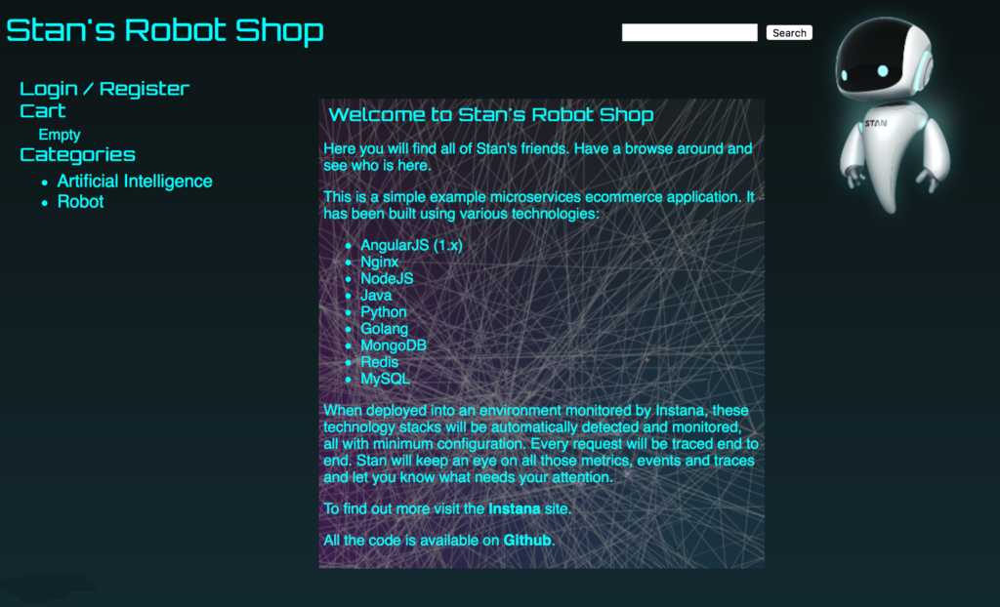
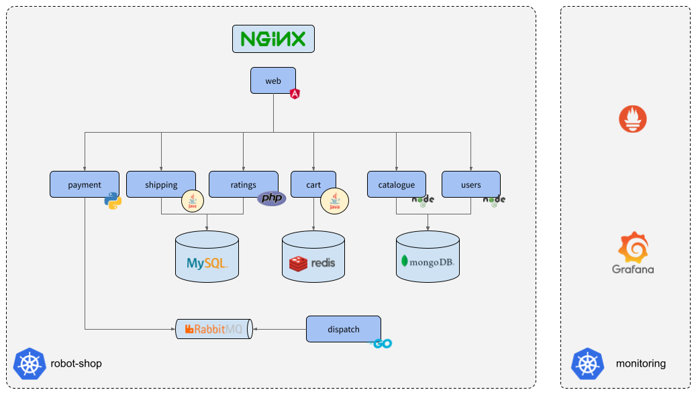
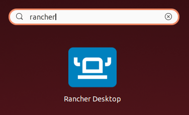
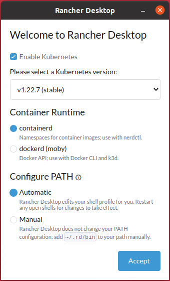
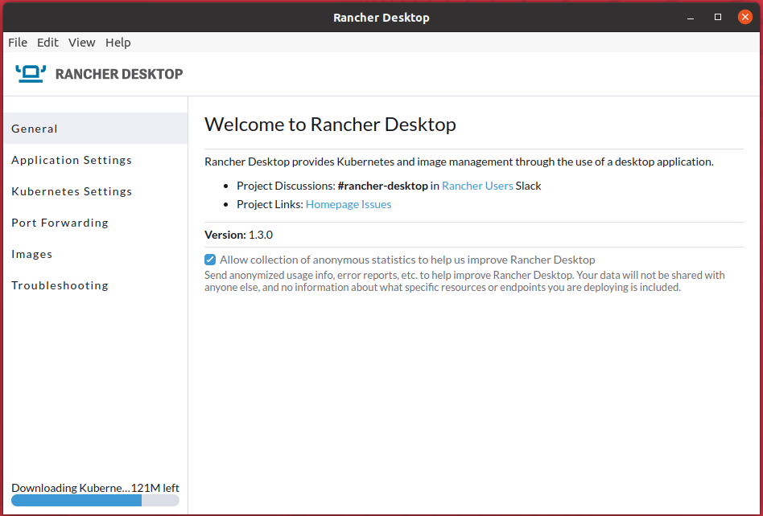
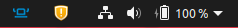
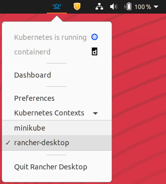

Para a visualização das principais métricas de confiabilidade defendidas por práticas de SRE, utilizaremos o benchmark do Stan's Robot Shop.

A aplicação consiste em um e-commerce de robôs, e por meio dela será possível monitorar os serviços utilizados desde a visualização da lista de robôs disponíveis para venda e adição no carrinho de compras até o checkout e geração do pedido.

Faremos a instalação via pacote .deb.
Faça o download da chave GPG do Rancher.
curl -s https://download.opensuse.org/repositories/isv:/Rancher:/stable/deb/Release.key | gpg --dearmor | sudo dd status=none of=/usr/share/keyrings/isv--rancher-stable-archive-keyring.gpg
Adicione o repositório do Rancher à lista dos repositórios disponíveis no seu sistema.
echo 'deb [signed-by=/usr/share/keyrings/isv--rancher-stable-archive-keyring.gpg] https://download.opensuse.org/repositories/isv:/Rancher:/stable/deb/ ./' | sudo dd status=none of=/etc/apt/sources.list.d/isv-rancher-stable.list
Atualize a lista de pacotes do seu sistema.
sudo apt update
Instale o Rancher Desktop.
sudo apt install rancher-desktop
Acesse https://rancherdesktop.io/ e baixe o instalador para Windows.
Execute o instalador e aceite o acordo de licença.
Abra o Rancher desktop.

Na tela de boas-vindas, verifique se está selecionada a versão "stable" do Kubernetes, "containerd" e "Automatic" e clique em Accept.
Obs.: No Windows, selecione "dockerd (moby)" como Container Runtime.

O Kubernetes (K3s) será instalado. Você pode acompanhar o progresso no canto inferior esquerdo da janela do Rancher.

Verifique a bandeja do seu sistema (system tray) se o ícone do Rancher Desktop está presente.

Clique no ícone do Rancher Desktop e verifique em Kubernetes Contexts se o rancher-desktop está selecionado.

Instalação da aplicação no Kubernetes via Helm.
Crie o namespace robot-shop no Kubernetes.
kubectl create ns robot-shop
Instale a aplicação.
helm install robot-shop --create-namespace -n robot-shop robot-shop/K8s/helm/